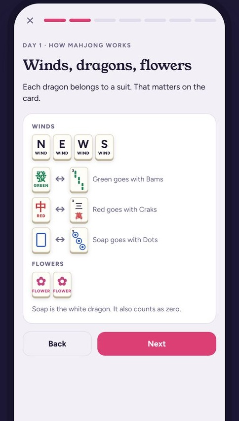

You're one tile from Mahjong. 5 questions.
Guess before you swipe. Score yourself out of 5.
Question 1
Your last tile finishes a pair. Someone just threw it. Can you call it?
YES
For Mahjong, you can.
Pairs and singles can't be called for an exposure. For your winning tile, they can.
Question 2
You're playing a closed hand, a C on the card. Can you call a discard for your last tile?
YES
Only for Mahjong.
Closed hands can't call for exposures. The winning tile is the one exception.
Question 3
You need one tile to finish a pair. A joker sits in someone's exposure. Swap for it and win?
NO
Jokers never go in pairs.
A joker swap can finish a pung, kong or quint. Never a single or a pair.
Question 4
You call Mahjong and lay out your hand. You're wrong. What happens?
DEAD HAND
You're out of the game.
Your hand is dead. Everyone else keeps playing.
Question 5
Before anyone checked that wrong Mahjong, your friend tossed her tiles in. Is she safe?
NO
She's dead too.
Keep your tiles until the Mahjong is verified. Every time.
Call your first Mahjong at home.
Practice real hands in Sparrow. Free on iOS.
